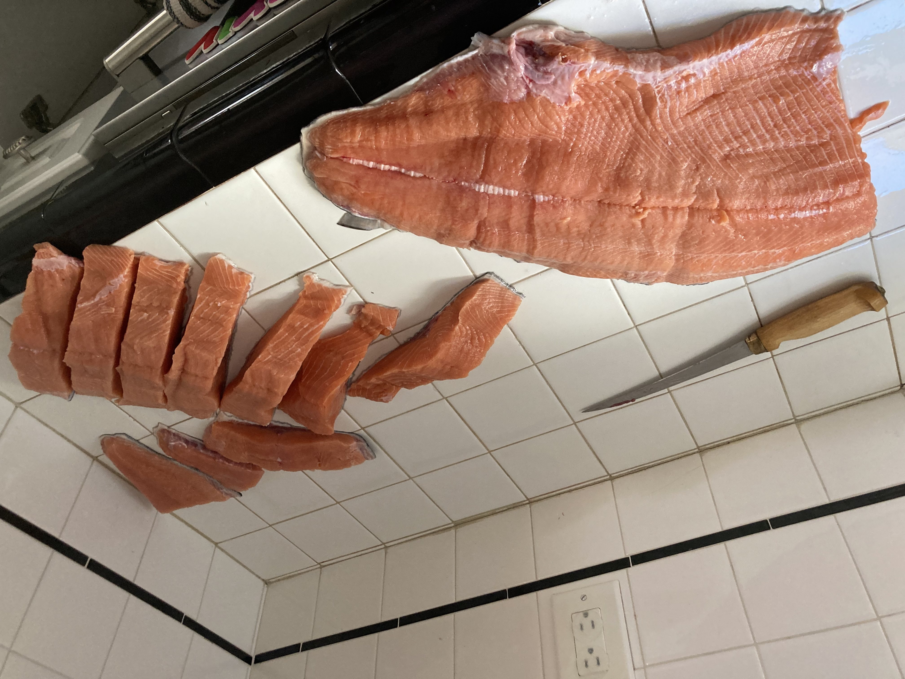

Alder Smoked Salmon

Smoked Salmon Recipe By a Die Hard Salmon Fisherman
Ingredients:
- 15 lbs. Chinook Salmon cut into 2" strips from dorsal to belly (width-wise), skin inntact.
- Bowl of brine: 2 parts Kikkoman Teriyaki, 1 part water.
- 8 oz jar of fresh honey
- Accent (msg powder, optional)
- Alder chips
- Roll of thick paper towels
- Big Chief Smoker
- Vacuum Sealer
Preparation and Cooking:
- Brine strips of salmon in teriyaki solution overnight (8 hours).
- Remove salmon and place on smoker racks, dry juices with paper towels.
- Allow salmon to air dry for about 4 hours until pellicle forms.
- Load racks into smoker with a heaping pan of Alder chips. Should be done in cool weather, preferably overcast and foggy. If extrmely cold, smoker may need to be covered with the cardboard box it came with
- Thickest cuts on bottom and thinnest cuts higher in the smoker, smoke for approximately 4 hours depending on weather. Add second pan of heaping Alder chips halfway through process.
- Baste with warmed honey using a silcone brush. Toward last 30 min. of smoking process.
- Remove racks when salmon has slighlty darker color on the edges of thicker cuts, any longer and you will end up with salmon jerky. Ideally 4 hours in the smoker.
- Baste more honey, after cuts have cooled.
- After cuts have cooled somewhat, vacuum seal gift sized portions, 1-2 pieces at a time. If storing unrefirgerated, lightly dust each piece with Accent powder (msg) before packaging.